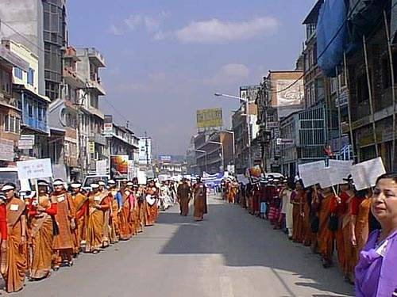

پذيرش > اخبار > همبستگی بين المللی با مبارزات زنان ايران، فراخوان ٤٢ تن از فعالين عرصه (...)


 همبستگی بين المللی با مبارزات زنان ايران، فراخوان ٤٢ تن از فعالين عرصه زنان همبستگی بين المللی با مبارزات زنان ايران، فراخوان ٤٢ تن از فعالين عرصه زنان
18 خرداد 1386 - - نسخه قابل چاپ
امروز، پس از بيست وهفت سال تجربهی پر فراز و نشيب، جنبش احقاق حقوق زنان در ايران، با مراجعه به ميثاقهای بين المللی برای طرح شعار" برابری" و اعلام ضرورت " لغو تمام قوانين تبعيض آميز" قدم به ميدان چالشی سرنوشت ساز نهاده است. در اين چشم انداز، مبارزات زنان پيشرو در ايجاد مراکز فرهنگی، اقدامات گروهی و بر پائی کارزارهای اعتراضی متعدد از جمله کمپينهای " يک ميليون امضا " و " عليه سنگسار" تلاشهائی به غايت اميد آفرين است.
طرح اين گفتارها و پيش برد اين کنش های اجتماعی بی شک و بيش از پيش به گره خوردن خواست "برابری" و"آزادی" خواهد انجاميد. به جرات می توان گفت که در ايران امروز ، جنبش زنان در توازی و تلاقی با ديگر جنبشهای اجتماعی آزادی خواهانه و حق طلبانه، در مرکز مبارزه برای دمکراسی قرار گرفته است .
با گرد آوردن زنان و مردانی با عقايد و افکار گوناگون در دفاع از خواست برابری، جنبش زنان در ايران کارزاری فرهنگی ـ اجتماعی بر پا کرده که تمامی عرصههای قدرت را به پرسش می کشد. چرا که مناسبات ميان جنسها امری اجتماعی ، سياسی و فرهنگی است که همه دامنههای زندگی را از خصوصی ترين تا عمومی ترين آن در بر میگيرد. از همين رو، همياری در مبارزه برای حقوق زنان هريک از آحاد جامعه را به بازنگری در همه مسائل شخصی و اجتماعی و سياسی دعوت می کند.
امروز در ايران، " بد حجابی" محمل تهاجم روزمره نيروهای حکومتی به زنانی است که به الگوی ايدولوژيک نظام اسلام گرا "نه" می گويند. در همين حال و به واسطه اين تعرضات، حاکمان حضور نيرو های سرکوبگر را در فضای جامعه توجيه و تحکيم می کنند و ترس می پراکنند. اجبار "حجاب " زنان که نماد انقياد آنان است، بدل به ابزاری برای گسترش سرکوب در همه سطوح جامعه شده است.
به واقع موقعيت زنان آينه ای است تمام نما در برابر جامعه که چهره واقعی قدرت مسلط را به وضوح نشان می دهد و رويکرد فمينيستی با روشنگری در باره مناسبات جنسيتی پيچيدگی روابط قدرت را در سطوح گوناگون زندگی اجتماعی آشکار می کند. نمی شود انديشه و عمل فمينيستی را در چهار چوب يک حزب يا سازمان سياسی محدود کرد و درهمين حال نمی توان انکار کرد که منافع سياسی و گروهی نيز در اين ميانه به تقابل برمی خيزند. امری که توجه به آن در موضع گيری نسبت به گفتارها و کردارهائی که داعيه دفاع از جنبش زنان را در سر دارند، حياتی است.
بی گمان در ميانه کارزارهايی که زنان پيشرو ايران بر پا کرده اند اين داعيهها نيز به آزمون گزارده می شوند و بی ترديد ميتوان گفت که موضع گيری افراد و گروه ها نسبت به آزادی و برابری زنان نشان دهنده درجه پيگيری اينان در خواست آزادی، برابری و عدالت اجتماعی است.
در چنين شرايط خطيری، ما جمعی از زنان ايرانی در خارج از کشور، که سال هاست برای اعتلای موقعيت زنان مبارزه می کنيم، بر آن شده ايم که در عين حفظ استقلال نظری خود، قدم های هماهنگی برای حمايت هر چه مؤثرتر از اهداف برابری خواهانه جنبش زنان در ايران برداريم. ما در طول اين سالها، علی رغم تنوع عقايد و داشتن ديد گاههای نظری و سياسی متفاوت، در عين نه گفتن به " فمينيسم اسلامی" از ضرورت مبارزه مستقل زنان برای احقاق حقوق برابر و کسب آزادی سخن گفته و برای آن تلاش کرده ايم .
اقدام همگام امروزين ما بر پايه حداقلهای مشترک زير صورت گرفته و ادامه خواهد يافت :
١ـ درک ضرورت حمايت فعال از جنبش زنان در ايران، که با خواست "برابری" در جهت لغو تمامی تبعيضات جنسی با مراجعه به ميثاق های بين الملی ضامن حقوق بشر و آزادی زنان گام برميدارد.
٢ـ اعتقاد مشترک به اين امر که خواست زنان برای آزادی و برابری را با هيچ توجيه و تفسير از جمله رعايت هويت های قومی، مذهبی و ملی نمی توان محدود کرد. از هم اين رو است که "فمينيسم اسلامی" و" حقوق بشر اسلامی" راه به آزادی و برابری نخواهد برد. حال آنکه همياری اشخاص باورمند به مذاهب گوناگون و يا بی هيچ باور مذهبی در دفاع از ازشهای جهان روای حقوق بشر و آزادی و برابری زنان راه تحقق بهروزی فرد و جامعه را هموار خواهد ساخت .
٣- تلاش در اين جهت که طرح خواسته "برابری" با خواست " آزادی" گره خورده و زمينه هر چه گسترده شدن جنبش زنان را دراتحاد با ديگر جنبشهای حق طلبانه و دمکراتيک فراهم کند .
٤- يقين مشترک به مبارزه با اجبار " حجاب" که نماد انقياد زنان است و ابزار تثبيت تبعيض جنسيتی.
٥- نظر به اين که دامنه گيری سرکوب می تواند جنبش زنان را به رکود بکشاند و ما در خارج از کشور بااستفاده از امکان آزادی بيان می توانيم، در عين مشارکت در نقد و حفظ استقلال نظری، در حمايت از مبارزه فمينيستی در ايران نقشی ضروری ايفا کنيم.
با توجه به اين حداقل های مشترک و با رعايت آنها، ما افراد اين شبکه، در شهرهای اروپا و آمريکا به طرح و اجرای اقدامات گوناگون در جهت حمايت فعال از جنبش زنان در ايران دست خواهيم زد.
ما از تمامی زنانی که در اين نقطه نظرات خود را با ما شريک ميدانند و به ضرورت اين کنش حمايتی در موقعيت خطير کنونی اعتقاد دارند، صميمانه دعوت میکنيم به اين اقدام بپيوندند.
"شبکه جهانی همبستگی با مبارزات زنان ايران"
دعوت کنندگان:
١- پروين ابراهيم زاده - آلمان
٢- نگار آزموده - کانادا
٣- ليلا اصلانی - آلمان
٤- سيمين افشار - آلمان
٥- الهه امانی - آمريکا
٦- ايراندخت انصاری - فرانسه
٧- فريماه ايجادی - فرانسه
٨- شعله ايرانی - سوئد
٩- آنا آسيه پاک - فرانسه
١٠- مهشيد پگاهی سينا - آلمان
١١- کتايون پيرداوری - آلمان
١٢- پروين ثقفی - آلمان
١٣- ميهن جزنی - فرانسه
١٤- عاطفه جعفری - آلمان
١٥- گلرخ جهانگيری - آلمان
١٦- قدسی حجازی - آلمان
١٧- مهوش دالائی - آلمان
١٨- هايده درآگاهی - سوئد
١٩- ياسمن درويش - اطريش
٢٠- مهشيد راستی - سوئد
٢١- ميهن روستا - آلمان
٢٢- پروانه زرگر- آلمان
٢٣- پروانه سپهر- انگلستان
٢٤- سعيده سعادت - آلمان
٢٥- گيتی سلامی - آلمان
٢٦- شهلا شفيق - فرانسه
٢٧- نسرين صادقی - آلمان
٢٨- الهه صدر- آلمان
٢٩- ژاله طالب حريری - آلمان
٣٠- شهلا عبقری - آمريکا
٣١- گيتی عدالتی - آلمان
٣٢- مريم عظيمی - آلمان
٣٣- شهلا فيضی - آلمان
٣٤- منيره کاظمی - آلمان
٣٥- فاطمه کبيری - آلمان
٣٦- نرگس کرمانشاهی - کانادا
٣٧- سيما محضری - آلمان
٣٨- اکرم موسوی - آلمان
٣٩- سهيلا ميرزايی - آلمان
٤٠- ناهيد نصرت - آلمان
٤١- مريم نوری - آلمان
٤٢- حميلا نيسگيلی - آلمان
ارسال به
بالاترین
،
توییتر
،
فریندفید
،
فیسبوک
در همين بخش :
 پروین ذبیحی برنده جایزه حقوق بشری سازمان غيردولتى اتريشى سودويند شد پروین ذبیحی برنده جایزه حقوق بشری سازمان غيردولتى اتريشى سودويند شد
پخش کارت پستال و بروشور در روز جهانی زن در تهران
تمدید زمان برای امضای بیانیهی جمعی از فعالان زن به مناسبت هشت مارس
مجوزی که در نطفه خفه شد
بیش از 2000 امضا در اعتراض به تبعیض های آموزشی به مجلس تحویل داده شد
ديگر بخش ها :
طرح یک میلیون امضا
|
مقالات
|
سایت نوشته ها
|
اخبار
|
گزارش كمپين
|
گفت و گو
|
علیه سکوت
|
كوچه به كوچه
|
نامه های شما
|
گزارش ویژه
|
گفتگو با اعضا
|
ویژه سالگرد کمپین
|
تصویر برابری
|
دل آرام علی
|
تریبون
|
مقالات
|
تاریخ شفاهی
|
خارج از چارچوب
|
کتابخانه
|
درباره کمپین
|
کمپین در شهرها
|
کمپین در بند
|
صدای تغییر
|
ویژه 22 خرداد
|
لایحه حمایت از خانواده
|
گالری
|
عشا مومنی
|
امیر یعقوبعلی
|
خدیجه مقدم
|
راحله عسگری زاده و نسیم خسروی
|
پروین اردلان،جلوه جواهری، مریم حسین خواه، ناهید کشاورز
|
زینب پیغمبرزاده
|
سعیده امین، سارا ایمانیان، محبوبه حسین زاده، ناهید کشاورز و همایون نامی
|
احترام شادفر
|
نسیم سرابندی زاده،فاطمه دهدشتی
|
وبلاگ مهمان
|
پرونده خرم آباد
|
دستگیری ها
|
مریم مالک
|
پرستو اللهیاری
|
مهرنوش اعتمادی
|
سمیه رشیدی
|
Other Languages
|
همراهان
|
«فراخوان کمپین ده روز با بهاره هدایت»
| English
|